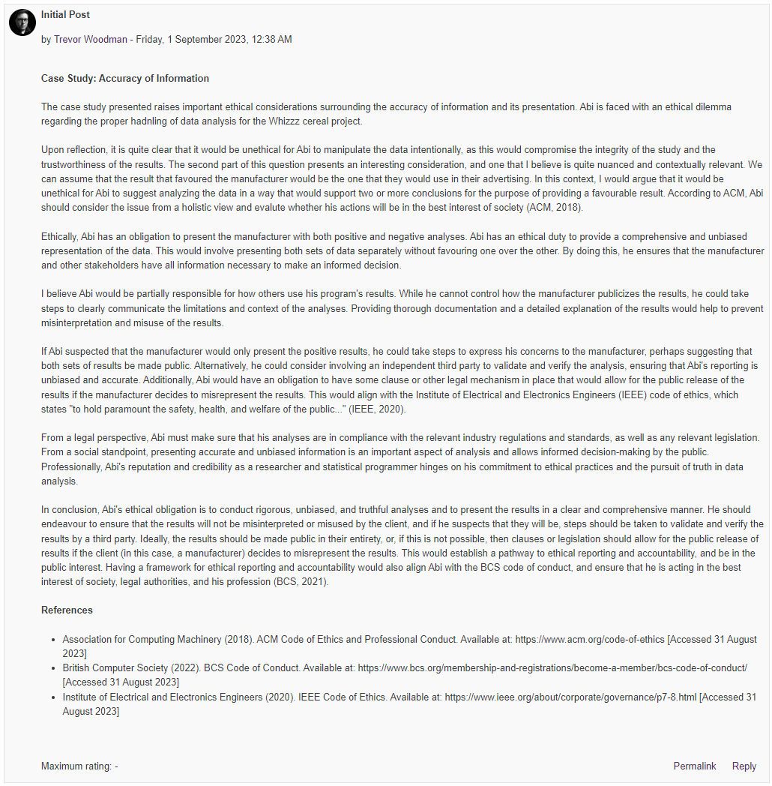

⬅️Back
Unit 7 Collaborative Discussion 2 - Week 1
Instructions
Discussion Topic - Case Study: Accuracy of information
Abi is a researcher at an institute and also a statistical programmer. Abi has received a project from a manufacturer to review the nutritional value of a new cereal, Whizzz. Having collected the necessary data, he now needs to perform the appropriate analyses and print the reports for him to send to the manufacturer. Unfortunately, the data Abi has collected seems to refute the claim that Whizzz is nutritious, and, in fact, they may indicate that Whizzz is harmful.
Abi also realises that some other correlations could be performed that would cast Whizzz in a more favourable light. “After all,” he thinks, “I can use statistics to support either side of any issue.”
Ethical Concerns
- Clearly, if Abi changed data values in this study he would be acting unethically. But is it any more ethical for him to suggest analysing correct data in a way that supports two or more different conclusions?
- Is Abi obligated to present both the positive and the negative analyses?
- Is Abi responsible for the use to which others put his program results?
- If Abi does put forward both sets of results to the manufacturer, he suspects that they will publicise only the positive ones. What other courses of action has he?
You should also highlight legal, social and professional impacts of any choices made. Please note that there are no right or wrong answers here and you may introduce local, as well as international, legislature in your responses.
You should demonstrate that you understand the topic covered and ensure you use references to academic literature (including journals, books, and reports). This activity will provide evidence of your personal growth and your summary post is required in your e-portfolio.
Your initial posting should respond to the question and be at least 200 words long. Your initial post should be labelled “initial post”.
Initial Post

Text Version
The case study presented raises important ethical considerations surrounding the accuracy of information and its presentation. Abi is faced with an ethical dilemma regarding the proper hadnling of data analysis for the Whizzz cereal project.
Upon reflection, it is quite clear that it would be unethical for Abi to manipulate the data intentionally, as this would compromise the integrity of the study and the trustworthiness of the results. The second part of this question presents an interesting consideration, and one that I believe is quite nuanced and contextually relevant. We can assume that the result that favoured the manufacturer would be the one that they would use in their advertising. In this context, I would argue that it would be unethical for Abi to suggest analyzing the data in a way that would support two or more conclusions for the purpose of providing a favourable result. According to ACM, Abi should consider the issue from a holistic view and evalute whether his actions will be in the best interest of society (ACM, 2018).
Ethically, Abi has an obligation to present the manufacturer with both positive and negative analyses. Abi has an ethical duty to provide a comprehensive and unbiased representation of the data. This would involve presenting both sets of data separately without favouring one over the other. By doing this, he ensures that the manufacturer and other stakeholders have all information necessary to make an informed decision.
I believe Abi would be partially responsible for how others use his program’s results. While he cannot control how the manufacturer publicizes the results, he could take steps to clearly communicate the limitations and context of the analyses. Providing thorough documentation and a detailed explanation of the results would help to prevent misinterpretation and misuse of the results.
If Abi suspected that the manufacturer would only present the positive results, he could take steps to express his concerns to the manufacturer, perhaps suggesting that both sets of results be made public. Alternatively, he could consider involving an independent third party to validate and verify the analysis, ensuring that Abi’s reporting is unbiased and accurate. Additionally, Abi would have an obligation to have some clause or other legal mechanism in place that would allow for the public release of the results if the manufacturer decides to misrepresent the results. This would align with the Institute of Electrical and Electronics Engineers (IEEE) code of ethics, which states “to hold paramount the safety, health, and welfare of the public…” (IEEE, 2020).
From a legal perspective, Abi must make sure that his analyses are in compliance with the relevant industry regulations and standards, as well as any relevant legislation. From a social standpoint, presenting accurate and unbiased information is an important aspect of analysis and allows informed decision-making by the public. Professionally, Abi’s reputation and credibility as a researcher and statistical programmer hinges on his commitment to ethical practices and the pursuit of truth in data analysis.
In conclusion, Abi’s ethical obligation is to conduct rigorous, unbiased, and truthful analyses and to present the results in a clear and comprehensive manner. He should endeavour to ensure that the results will not be misinterpreted or misused by the client, and if he suspects that they will be, steps should be taken to validate and verify the results by a third party. Ideally, the results should be made public in their entirety, or, if this is not possible, then clauses or legislation should allow for the public release of results if the client (in this case, a manufacturer) decides to misrepresent the results. This would establish a pathway to ethical reporting and accountability, and be in the public interest. Having a framework for ethical reporting and accountability would also align Abi with the BCS code of conduct, and ensure that he is acting in the best interest of society, legal authorities, and his profession (BCS, 2021).
References
- Association for Computing Machinery (2018). ACM Code of Ethics and Professional Conduct. Available at: https://www.acm.org/code-of-ethics [Accessed 31 August 2023]
- British Computer Society (2022). BCS Code of Conduct. Available at: https://www.bcs.org/membership-and-registrations/become-a-member/bcs-code-of-conduct/ [Accessed 31 August 2023]
- Institute of Electrical and Electronics Engineers (2020). IEEE Code of Ethics. Available at: https://www.ieee.org/about/corporate/governance/p7-8.html [Accessed 31 August 2023]